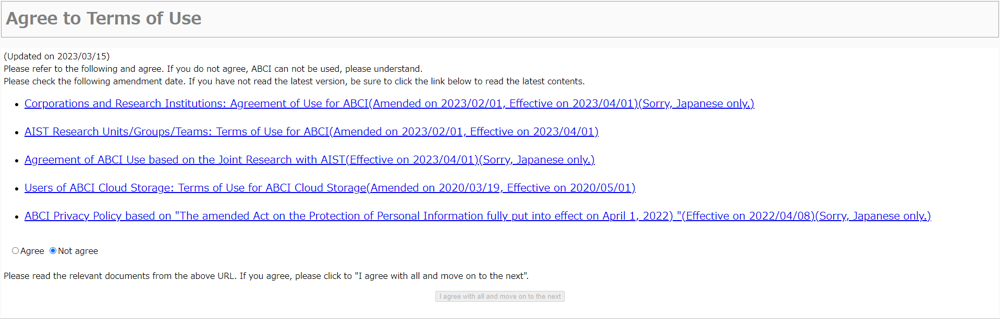
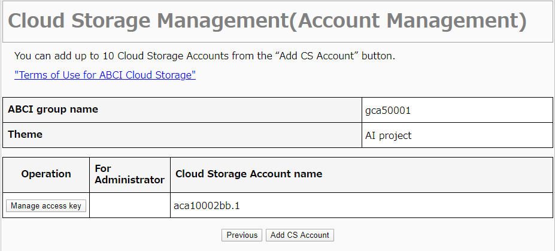

2. User Portal
The functions described in this chapter are available for responsible persons and users. Responsible persons and users who are granted the user administrator authority can use the functions described in User Administrator Authority.
2.1. Login
Access ABCI User Portal.
![[[Screenshot]]](../img/2_01.png)
Enter your ABCI account name and the number of 6 characters in the image, and click the "Next" button. If you cannot read numbers, click the "Reload" button to change the image.
![[[Screenshot]]](../img/2_02.png)
The URL for login will be notified to your e-mail address. Launch your favorite browser and copy/paste the URL.
![[[Screenshot]]](../img/2_03.png)
Enter your ABCI account and password, and click the "Login" button.
2.1.1. First Login

When you login for the first time, the terms of use is displayed. Refer to the terms of use and click the "I agree with all and move to the next" button if you agree.
![[[Screenshot]]](../img/2_05.png)
Enter current password and new password, and click the "Change" button. When the dialog box is displayed, click the "OK" button.
When password is changed successfully, the screen for password change completion will be displayed. Click the "TOP menu" button.
2.2. Change Password
Click the "Change Password" from the side menu.
![[[Screenshot]]](../img/2_07.png)
Enter current password and new password, and click the "Change" button. When the dialog box is displayed, click the "OK" button.
When password is changed successfully, the screen for password change completion will be displayed.
2.3. Register Public Key
Up to 10 public keys can be registered. Click the "Register Public Key" from the side menu.
2.3.1. Direct Input
Select the "Direct input".
![[[Screenshot]]](../img/2_09.png)
Enter your public key in the text area and click the "Register" button.
Note
If your public key is PuTTY style, convert to OpenSSH style with PuTTYgen and enter it.
2.3.2. File Upload
Select the "File Upload".
![[[Screenshot]]](../img/2_10.png)
Select your public key.
Note
The public key of PuTTY style is not supported.
2.3.3. Registration Completion
When clicking the "Register" button, the dialog box will be displayed. Click the "OK" button in the dialog box.
![[[Screenshot]]](../img/2_11.png)
When public key is registered successfully, the screen for public key registration completion will be displayed.
2.4. Browse / Delete Public Key
Click the "Browse / delete public key" from the side menu.
When checking the checkbox from the list of public keys and click the "Delete" button, the dialog box will be displayed. Click the "OK" button in the dialog box.
When public key is deleted successfully, the screen for public key deletion completion will be displayed.
2.5. Node Reservation / Cancellation
Select the "Node reservation / cancellation" on the side menu.
The list of node reservations is displayed.
2.6. Usage History for ABCI Point
Click the "Usage history for ABCI point" on the side menu.
![[[Screenshot]]](../img/2_16.png)
2.6.1. Display Usage
Click the "Display" button of group information from the list.
The usage of ABCI point is displayed.
2.6.2. Display Usage History
Click the "More Detail" button on the screen.
![[[Screenshot]]](../img/2_18.png)
The monthly ABCI point usage is displayed.
2.7. Cloud Storage Usage
Click the "Cloud Storage Management" on the side menue.
The list of available ABCI groups is displayed.
2.7.1. Manage ABCI Cloud Storage account
Click "Manage CS Account" button on the screen.
![[[Screenshot]]](../img/2_20.png)
2.7.1.1. Add ABCI Cloud Storage account
Click "Add CS Account" button on the screen.
Refer to the terms of use and click the "I agree with all and move on to the next" button if you agree.
A screen appears that the new account has been created. Click "To CS Account list" button on the screen.
2.7.2. Manage Access key
When Cloud Storage account is created, "Access Key Management" button is displayed in the operation column each Cloud Storage account.

Click "Manage access key" button on the screen.
Secret access keys can be controlled on this screen, such as issued, delete and reissue.
2.7.2.1 Create New Access Key
Click "issue a new access key" button on the screen, and dialog box appear. Click "OK" button.
![[[Screenshot]]](../img/2_25.png)
A screen appears that the new access key has been issued. Click "To access key manegement"
2.7.2.2. Delete Access Key
Click "Delete" button which you want to delete, and click "OK" on the dialog box.
When the access key has been deleted, access key management screen appears.
2.7.5. Reissue Access Key
Click "Reissue" button which you want to reissue, and click "OK" on the dialog box.
![[[Screenshot]]](../img/2_28.png)
Click "To access key management" button on the screen.
![[[Screenshot]]](../img/2_29.png)
Access key management screen is displayed.